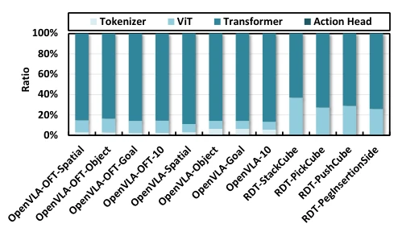
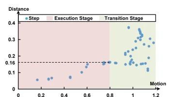
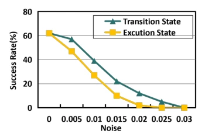
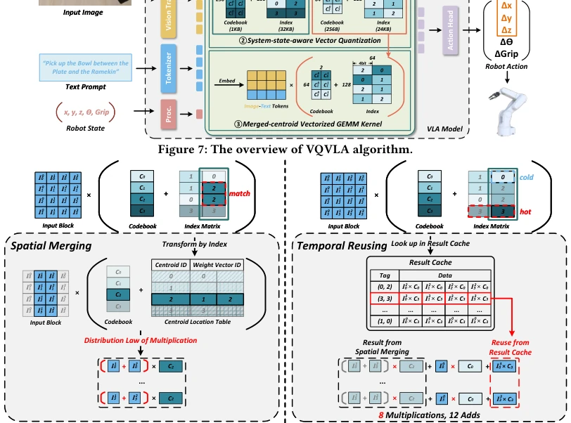
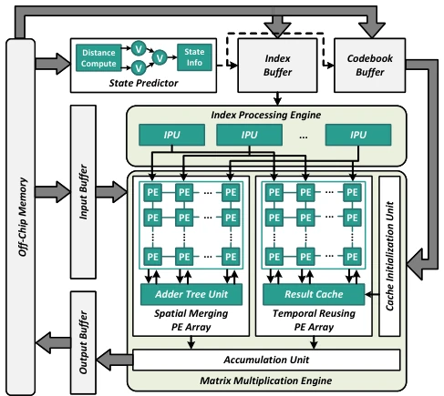
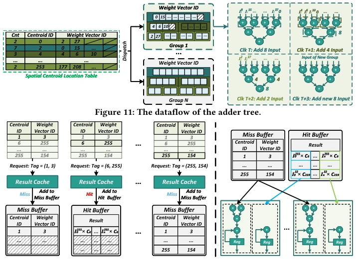
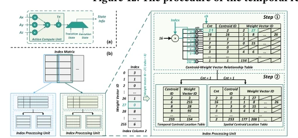
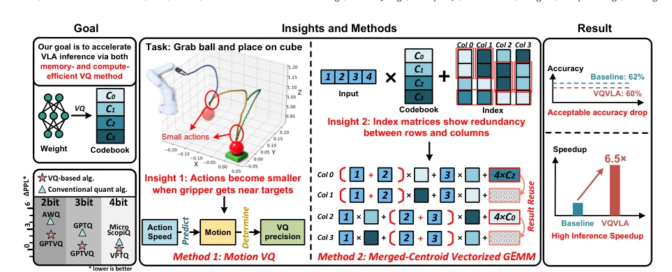

This paper proposes a 'dynamic pruning' scheme for VLA models. Authors found robot tasks vary between 'delicate work' (near objects) and 'transit' (transition states), so they developed MotionVQ to dynamically adjust quantization precision based on motion amplitude. More significantly, they found many repeated centroids in the quantized codebook, leading to a 'merged centroid GEMM' that saves multiplications and reuses results. A dedicated accelerator was also implemented. Although speed increased by 6.5 times, the 'motion-aware' threshold tuning is critical to avoid failure, and hardware complexity is high, typical of 'software-hardware combination, benefiting from both sides'. However, it is a viable path for edge deployment, though generalization is uncertain. Given diverse robot action patterns, setting threshold Td is heuristic, and reliance on specific hardware architecture raises questions about generalizability.
VLA models are powerful in embodied AI but have high inference latency unsuitable for edge devices. Existing accelerators like Dadu-Corki [22] reduce invocation frequency by predicting future actions but treat VLA as a full-precision black box, ignoring internal redundancy. The paper notes the Transformer backbone consumes 80% of time with high memory bandwidth and compute intensity. Authors observed robot motion amplitude correlates with task sensitivity: small actions (execution state) are sensitive, large actions (transition state) are insensitive. Additionally, VQ quantization creates centroid access hotspots and redundancy. Existing VQ methods use static precision, ignore state sensitivity, and do not reduce compute load.

Figure 3: Execution time breakdown of four stages in VLA.

Figure 4: Motion behavior in multi-steps of a task.

Figure 5: Success rate under different noise patterns.
方法Method
整体框架 VQVLA 分三步：1) MotionVQ 算法：轻量级状态预测器计算运动幅度 D，若 D≤Td 为执行态（高精度，256 质心），否则为过渡态（低精度，64 质心）。2) 合并质心向量化 GEMM：直接在压缩域计算。空间合并：同一列内相同质心对应的输入先累加再乘（利用分配律）。时间复用：跨列重复质心复用缓存结果（Tag 匹配）。3) 硬件架构：状态预测器、索引处理引擎（生成位置表）、矩阵乘法引擎（空间合并 PE 阵列 + 时间复用 PE 阵列 + 结果缓存）。数据流支持流水线，减少关键路径延迟。具体而言，空间合并 PE 阵列集成加法树，支持 8/4/2 输入归约，每 3 周期输出 7 个结果。时间复用 PE 阵列维护结果缓存，通过 Tag 匹配跳过重复乘法。索引处理引擎并行生成空间与时间质心位置表，确保高吞吐。
The overall VQVLA framework consists of three steps: 1) MotionVQ algorithm: a lightweight state predictor calculates motion amplitude D; if D ≤ Td it is the execution state (high precision, 256 centroids), otherwise transition state (low precision, 64 centroids). 2) Merged Centroid Vectorization GEMM: computation in compressed domain. Spatial merge: inputs for same centroid in same column are accumulated then multiplied (distributive law). Time reuse: repeated centroids across columns reuse cached results (Tag match). 3) Hardware architecture: state predictor, index processing engine (generates position tables), matrix multiplication engine (spatial merge PE array + time reuse PE array + result cache). Data flow supports pipelining to reduce critical path latency. Specifically, spatial merge PE array integrates adder tree, supports 8/4/2 input reduction, outputs 7 results every 3 cycles. Time reuse PE array maintains result cache, skips repeated multiplications via Tag match. Index processing engine generates spatial and time centroid position tables in parallel for high throughput.

Figure 8: The details of spatial merging (a), temporal reusing (b).

Figure 9: The overview of VQVLA architecture.

Figure 12: The procedure of the temporal reusing PE array performing temporal reusing.

Figure 13: The structure of the state predictor and index processing engine.
Models such as OpenVLA, RDT, pi0 were tested on LIBERO and ManiSkill benchmarks. Baselines include A100 GPU, Dadu-Corki [22], LUT-DLA, etc. Metrics are inference speedup and task success rate. Results show VQVLA achieves 6.5 times speedup over A100 and 2.8 times over Dadu-Corki [22], with negligible accuracy drop. Ablation studies verify MotionVQ and centroid reuse effectiveness. Specifically in LIBERO-Spatial tasks, MotionVQ significantly reduces bit rate while maintaining success rate.

Figure 1: Overview of VQVLA, a hardware and software co-design framework.